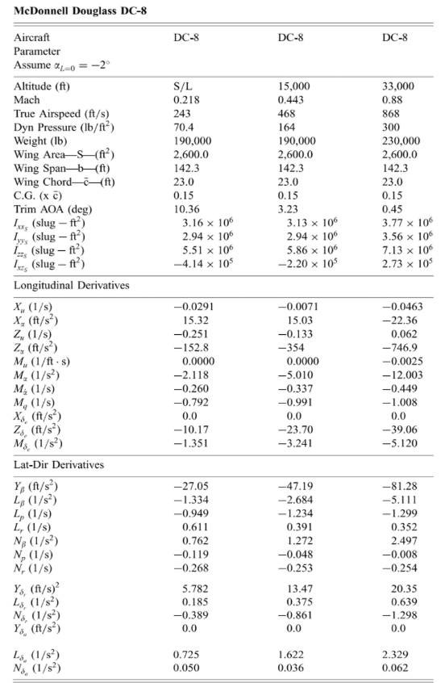
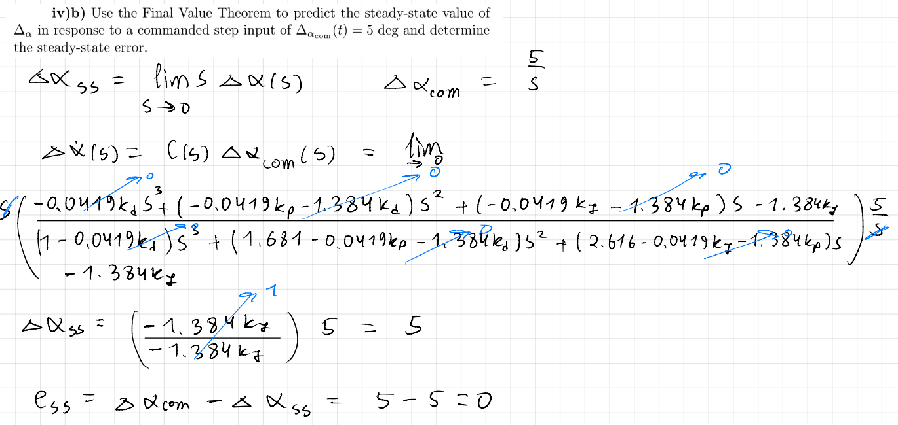
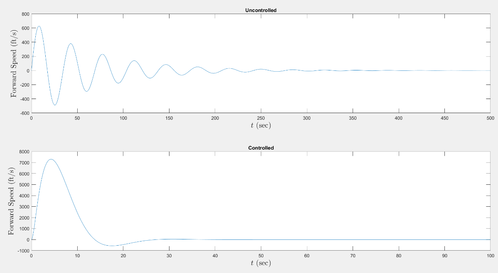

AE 432 · Flight Dynamics and Control · Fall 2025 · ERAU
Role
Team Member — Flight Dynamics & PID Design
AE 432: Flight Dynamics and Control · ERAU · Fall 2025
Tools
MATLAB · Transfer Function Analysis · Pole Placement
Characteristic Polynomial Matching · Final Value Theorem
Key Contributions
Modern aircraft rely on automated flight control systems to maintain stability, track commanded states, and reject atmospheric disturbances — tasks too fast and too precise for a pilot to perform manually at all flight conditions. The PID controller is the foundational architecture behind elevator deflection systems, autothrottle, and autopilot modes on virtually every commercial aircraft flying today. This project applied that theory to the McDonnell Douglas DC-8: a classic long-range jet airliner whose well-documented stability derivatives made it an ideal subject for a full modal analysis and controller synthesis workflow.

Three classical approximation transfer functions were derived from the DC-8’s published stability derivatives, one for each natural mode of motion. Each was obtained by applying Laplace transforms to the linearized equations of motion and isolating the ratio of output state to control surface deflection.
Short Period (elevator → angle of attack):
Δα(s) / Δδe(s) = (−0.04195s − 1.384) / (s2 + 1.6815s + 2.616)
Phugoid / Long Period (throttle → forward speed):
ΔU(s) / ΔδT(s) = 12.9s / (s2 + 0.02915s + 0.03326)
Dutch Roll (rudder → roll rate):
ΔP(s) / Δδr(s) = (0.03379s − 0.3953) / (s2 + 0.3794s + 0.7918)
Natural frequencies and damping ratios extracted from pole locations:
| Mode | Poles | ωn (rad/s) | ζ |
|---|---|---|---|
| Short Period | −0.8404 ± j1.3819 | 1.6144 | 0.5196 |
| Phugoid | −0.01455 ± j0.18179 | 0.1823 | 0.0798 |
| Dutch Roll | −0.1897 ± j0.8694 | 0.8899 | 0.2132 |
The phugoid mode’s low damping (ζ = 0.0798) is characteristic of commercial transport aircraft — it produces slow, lightly-damped speed-altitude oscillations that pilots typically correct through autothrottle engagement. The short period’s ζ = 0.5196 is within the acceptable MIL-SPEC range for Level 1 handling qualities.
The closed-loop transfer function C(s) for the AOA loop combines the short period plant G(s), an actuator model GA(s) = 50/(s+50), and the PID controller GC(s) = (kds2 + kps + kI)/s. To make the gain system solvable (3 unknowns, 3 equations), the actuator was treated as perfect (GA = 1), reducing the closed-loop characteristic equation to 3rd order.
Performance specifications mapped to desired pole locations:
Desired characteristic equation: s3 + 3.6s2 + 1.989s + 0.567 = 0
Matching coefficients of the closed-loop denominator to the desired equation yielded:
kP = 0.3718 kI = −0.4366 kd = −1.569
The Final Value Theorem confirmed zero steady-state error: Δαss = lims→0 s · C(s) · (5/s) = 5°, exactly tracking the commanded step.

The throttle-controlled forward speed loop used the phugoid transfer function as the plant, paired with an actuator GA(s) = 75/(s+75). The closed-loop characteristic equation expanded to 4th order. Because the actuator introduced a 4th pole at s = −75 while only 3 PID gains are available, the system was underdetermined. The 4th pole was removed from the desired characteristic equation to make it solvable.
Performance specifications:
Solved PID gains: kd = −0.075, kp = −7.364×10−3, kI = −2.381×10−3
The Final Value Theorem confirmed ΔUss = 0 — zero steady-state speed error. However, the extremely small gain magnitudes and the resulting large forward speed transients (visible in Fig. 2) indicated the plant model was not well-conditioned for this controller topology at this flight condition.

| Controller | Max Overshoot | Settling Time | Steady-State Error | Spec Met? |
|---|---|---|---|---|
| AOA (elevator) | 4% (spec: ≤5%) | 15 s (spec: <10 s) | 0° | Overshoot ✓ ts ✗ |
| Forward Speed (throttle) | N/A — large transients | Not achieved | 0 ft/s | Analytically ✗ |
PID Gain Summary:
| Loop | kP | kI | kd |
|---|---|---|---|
| AOA (elevator) | 0.3718 | −0.4366 | −1.569 |
| Forward Speed (throttle) | −7.364×10−3 | −2.381×10−3 | −0.075 |
PID gains can be solved analytically from characteristic polynomial matching.
Mapping performance specs (Mp, ts) to desired poles, then equating denominator coefficients of the closed-loop TF to those desired poles, yields exact PID gain values — no trial and error. This coefficient-matching method is the standard workflow for any design-to-spec controller problem.
Actuator dynamics can make the system of equations unsolvable.
Including GA(s) = 75/(s+75) raised the characteristic equation to 4th order with only 3 unknowns, creating an underdetermined system. Removing the actuator pole made it tractable, but the resulting gain magnitudes were near-zero — signaling the actuator may not meaningfully affect this loop at sea level.
The phugoid mode’s low damping is why autothrottle exists.
The DC-8’s phugoid damping ζ = 0.0798 means uncontrolled speed-altitude oscillations decay extremely slowly. This is normal for transport aircraft — the mode is stable but barely. Modern autothrottle and flight management systems exist precisely to regulate this otherwise sluggish response.
The integral gain guarantees zero steady-state error regardless of transient behavior.
The Final Value Theorem confirmed Δαss = 5° analytically — even though the settling time specification was missed, the error at steady state is guaranteed zero by the integrator. This distinction between transient and steady-state performance is fundamental: a controller can fail one spec while passing another.